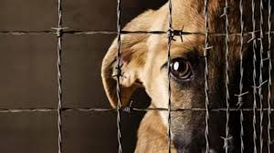

Respetar a los animales no solo es un acto de empatía, también refleja el nivel de valores de una sociedad. Diversos estudios han demostrado que las personas que cuidan a los animales suelen desarrollar mayor sencibilidad, responsabilidad y respeto hacia otros seres vivos.
En muchos países existen leyes que portegen a los animales contra el maltrato. En México, por ejemplo, hya normativas como la ley de Protección a los Animales, que estblece sanciones para quienes dañen o abandonen a los animales. Estas leyes buscan:
Además, a nivel internacional, organizaciones como la ONU han impulsado propuestas para reconocer a los animales como seres que merecen consideración moral.
Existen asiciaciones que trabajan día a día para rescatar, rehabilitar y dar en adopción a animales. Algunas de sus funciones son:
Estas organizaciones dependen en gran parte del apoyo social, como donaciones o voluntariado.
Una parte importante en la lucha contra la violencia animal es la denuncia. Las personas pueden reportar casos de maltrato a autoridades locales o a asociaciones protectoras. Participar activamente ayuda a crear una cultura de respeto y a disminuir la impunidad.
Fomentar el respeto hacia los animales desde la infancia clave. Incluir temas de bienestar animal en educación ayuda a formar generciones más conscientes. También es importante cambiar prácticas culturales que normalizan el maltrato, promoviendo alternativas más ética.